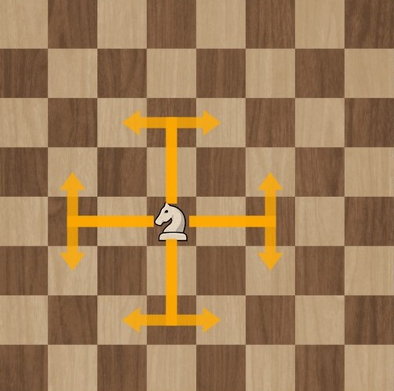
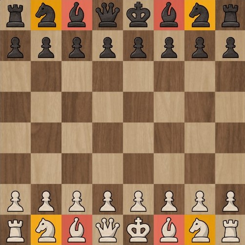
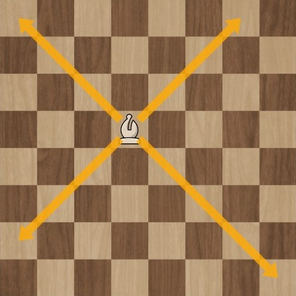
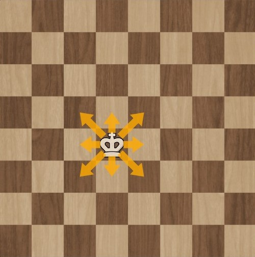
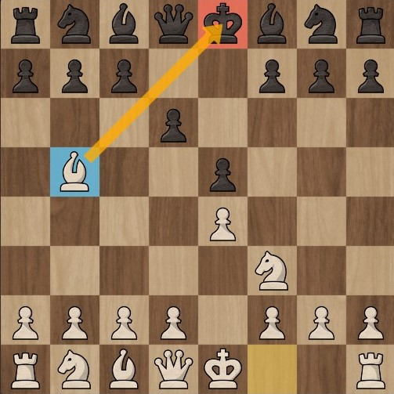

Uno de mis grandes y favoritos pasatiempos es jugar ¡Ajedrez!
¿Cómo se juega al ajedrez?
Para empezar, jugamos al ajedrez en un TABULADOR 8x8, ya que tiene 8 filas y 8 columnas
Podemos asociar la idea del tablero, como una matriz de 8 filas y 8 columnas: matriz[8][8]
Piezas de ajedrez
En total, cada jugador comienza el juego con 16 piezas, 6 de las cuales son diferentes.
Están en total
1 rey
1 dama
2 torres
2 obispos
2 caballos
8 peones
Torres
Las torres se colocan en los extremos del tablero, en la primera fila.
MOVIMIENTO: el movimiento que realizan las torres es siempre en paralelo (filas o columnas), tantas casillas como se desee siempre que haya espacio libre.
Recuerde que las piezas no pueden "saltar" por encima de otras, ni horizontal ni verticalmente, véase la ilustración siguiente:
CAPTURAR: en todas las casas en las que puede moverse.
Caballos
Los caballos deben colocarse cada uno en el lado interior de cada torre.
MOVIMIENTO: el caballo se mueve en una forma que reproduce la letra L, es decir, dos casillas en dirección horizontal o vertical, y una más en ángulo recto con la dirección anterior. Es la única pieza que puede saltar por encima de sus propias piezas o de las del adversario. Aunque el número de movimientos posibles del caballo es mayor, su uso está limitado por el número de casillas a las que puede moverse (una en cualquier dirección, una en diagonal).

Obsérvese que cada vez que movemos el caballo de una casilla de un determinado color a otra de otro color.
CAPTURAR: la pieza del adversario en la casilla donde el caballo termina su movimiento.
Alfiles
Los alfiles se colocan uno en el interior de cada caballo

MOVIMIENTO: Su movimiento es siempre diagonal, obedeciendo al color de su casilla inicial, es decir, el alfil de la casilla blanca no puede ocupar una casilla negra y viceversa, permaneciendo eternamente en el mismo color desde el principio hasta el final de la partida. Observe la ilustración de al lado. El alfil del bando, al estar en una casilla blanca, nunca puede amenazar a una pieza del adversario que se mueve en una casilla negra.

CAPTURAR: en todas las casas en las que puede moverse
Dama (ou Reina)
La ficha se coloca en el centro del tablero en la casilla de su color.
MOVIMIENTO: la pieza más poderosa y versátil del tablero, una reina puede moverse como una torre o un alfil, es decir, puede moverse en paralelo (filas o columnas) o en diagonal, tantas casillas como se quiera, siempre que haya espacio en el tablero.
CAPTURAR: en todas las casas donde pueda moverse
Rey
El rey, entre su alfil y la dama, observando siempre que el rey blanco se sitúa en la casilla NEGRA y el rey negro en la casilla BLANCA (invertida).
MOVIMIENTO: El rey sólo puede moverse una casilla por movimiento en todas las direcciones. No puede moverse a una casilla controlada por una pieza del adversario, ya que el rey no puede ceder ni colocarse en situación de jaque mate. Esta jugada no está permitida y ambos jugadores deben ser conscientes de ello.

CAPTURAR: en todas las casillas en las que puede moverse. No puedes capturar piezas defendidas por tu oponente, ya que serías capturado en la siguiente jugada, poniéndote así en jaque de antemano, lo que tampoco está permitido.
Peones
Es la pieza más sencilla y la que más se encuentra en el tablero: hay 8 peones en total para cada jugador
Deben colocarse delante de las otras piezas, por lo tanto en la segunda fila
Una casa desocupada en frente
Cuando el peón está en su casilla inicial, puede avanzar una o dos casillas sólo en el primer movimiento de cada peón.
El peón no debe retroceder bajo ninguna circunstancia.
Si se mueve la primera vez con el peón sólo una casilla, en el siguiente movimiento no se permite utilizar la opción de abrir con dos casillas.
CAPTURAR: sólo en las casillas diagonales (una sola casilla) de delante, como indica la flecha.
Algunas reglas básicas para iniciar el juego:
Las piezas blancas comienzan el juego.
Las piezas no pueden saltar sobre las piezas del adversario, excepto los caballos.
Cuando se toma una pieza del adversario, la pieza movida debe ocupar la misma posición.
Por convención, cuando se muestra un tablero en un diagrama, el negro está en el top
No está permitido poner al propio rey en jaque, en cuyo caso se debe advertir al jugador y devolver la jugada.
Cuando el rey está en jaque, debe ser protegido y no se permite ningún otro tipo de movimiento.
No se permite un movimiento de vuelta, es decir, cuando un jugador coge intencionadamente o no una pieza, debe hacer un movimiento con esta pieza. Excepto cuando la pieza tocada no tiene movimiento legal posible. Si un jugador toca una pieza del adversario con su mano o pieza, con la intención de capturarla o no, debe realizar la captura. Excepto en los casos en que el traslado no sea legalmente posible
Jaque y jaque mate
JAQUE
Siempre que el rey esté bajo ataque directo, significa que está en jaque. Poner en jaque al rey es mover una pieza cuyo radio de acción es atacar directamente al rey enemigo..

XEQUE-MATE
El jaque mate se produce cuando el rey es atacado por la pieza del adversario y no tiene salida. Significa el final del juego, con la victoria para el que ha hecho jaque mate. Este es el objetivo del juego: dejar al rey enemigo totalmente acorralado y sin salida.
Nótese que la reina cubre todas las casillas de escape del rey. La única posibilidad es que la reina se haga cargo. La torre, sin embargo, se defiende e impide tal movimiento. Por lo tanto, el rey no tiene forma de escapar, lo que culmina en un jaque mate y la consiguiente victoria de las blancas.
Las aberturas y las defensas que aparecen a continuación se consideran regulares.
Apertura Ruy Lopez
La Ruy López es una de las aperturas más antiguas y clásicas. Lleva el nombre de un obispo español que escribió uno de los primeros libros de ajedrez. Ruy López ataca al caballo que defiende el peón 5e. Las blancas utilizan este ataque con la esperanza de causar presión en el centro de las negras.
El objetivo es controlar rápidamente el centro con tu peón y tu caballo, y luego colocar el alfil en una de las casillas más peligrosas. El jugador también se preparará para enrocar.
La Defensa Siciliana es la opción más popular para los jugadores agresivos cuando están con negras. Normalmente las blancas jugarán ganando la casilla central, pero permite a las negras beneficiarse cambiando el peón central por el peón de alfil
La Defensa Francesa es una de las primeras estrategias de apertura que debe aprender un ajedrecista. Después de e5 (ahora o después), ambos bandos tendrán filas de peones. Uno de los riesgos de la Defensa Francesa es que puede ser bastante difícil desarrollar el alfil de c8.
La Defensa Eslava es una apertura muy sólida que defiende el peón de d5 con seguridad. Las piezas negras pueden moverse a sus casillas naturales, pero las negras suelen tener poco espacio.
Las aberturas y defensas enumeradas a continuación se consideran irregulares.
Ataque Bongcloud
Se considera una apertura de broma y se asocia al humor ajedrecístico de Internet. Su uso puede insinuar que el blanco se autoimpone, como un desafío autoimpuesto. Los streamers de Twitch, como el Grandmaster Hikaru Nakamura, lo han utilizado en el ajedrez relámpago en línea (una partida rápida de 3 o 5 minutos) online, incluyendo partidas contra oponentes de alto nivel como el campeón mundial de ajedrez Magnus Carlsen. El nombre también se ha aplicado a otras secuencias de apertura en las que uno de los jugadores mueve el rey en la segunda jugada.
Abertura Grob
Es probablemente una de las aperturas más excéntricas junto a la propia Defensa Grob porque en teoría el avance inicial de g4 no aporta nada al desarrollo y/o dominio de las casas centrales, según la teoría clásica del ajedrez, y debilita aún más el ala de rey de las blancas.
Defensa Grob
Esta es probablemente una de las defensas más excéntricas junto a la propia Apertura Grob, porque en teoría el avance inicial de g5 no aporta nada al desarrollo y/o dominio de las casillas centrales, según la teoría clásica del ajedrez, y debilita aún más el ala de rey de las negras. Si esto no fuera suficiente, la iniciativa de las blancas en la apertura sería


 Créditos: https://www.chess.com/
Créditos: https://www.chess.com/